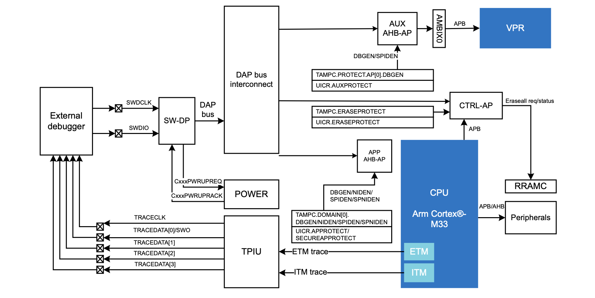
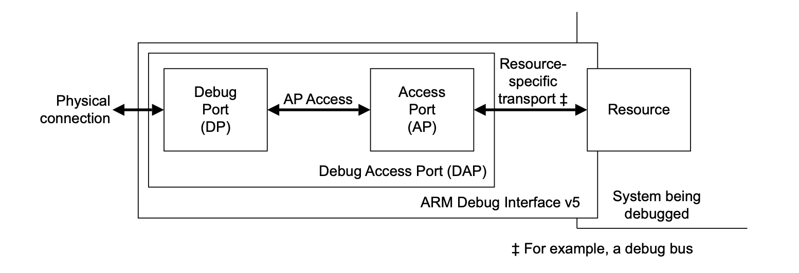
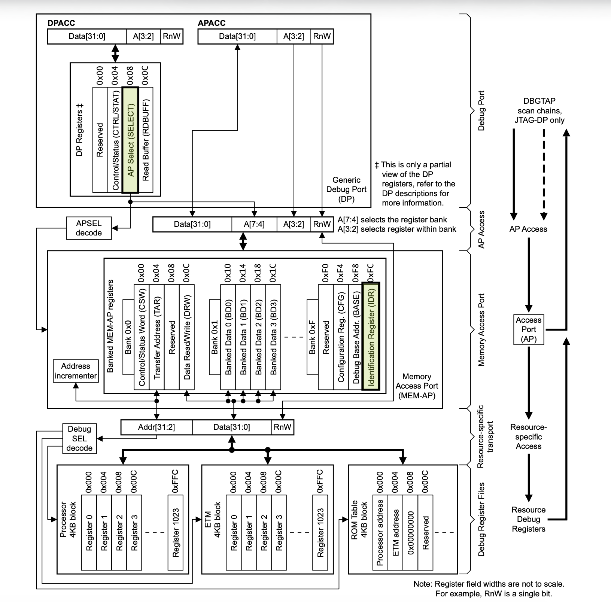

In my last post, I wrote about debugging the Nordic Semiconductor nRF54LM20 when a peripheral, specifically the Key Management Unit (KMU), writes directly to memory while the CPU is halted. Or I should really say that I wrote about debugging the application core (Cortex-M33), as the nRF54LM20 also has a RISC-V coprocessor (VPR) referred to as the Fast Lightweight Peripheral Processor (FLPR). Around the time that Nordic announced the VPR core, I wrote two posts; one about its architecture and the other about how communication works between it and an application core.
In the latter VPR post, I attached to the application core with GDB and
JLinkGDBServer in the same manner that I did in my recent KMU exploration post
in order to step through the communication protocol. This strategy was
appropriate for the operations described in the respective posts, but in some
cases it may be desirable to connect to the VPR core for debugging.
Typically, silicon vendors will provide tooling, or work with open source
projects, to make it easy to designate the core you want to connect to at a
higher level of abstraction. For example, Nordic products have robust suport in
the Zephyr RTOS ecosystem, and Zephyr’s meta
CLI, west, can
be used to build (west build) and flash (west flash) firmware on all chips.
west supports building and flashing multiple
images
in one operation using System Build
(Sysbuild).
Each build system managed by Sysbuild is referred to as a domain, and the
--domain flag can be used to perform the specified operation for only the
specified domain.
While we typically want to target all domains when building and flashing, west debug is a great example of how the --domain flag can be useful. For example,
if we were building the Zephyr blinky sample for the nRF54LM20, using the FLPR
for GPIO control via Nordic’s High Performance Framework
(HPF)
(stay tuned for a future post on HPF), we would use the following command to
build the blinky application for the application core and the GPIO application
for the FLPR core.
west build -p -b nrf54lm20dk/nrf54lm20b/cpuapp nrf/samples/zephyr/basic/blinky -- -DSB_CONFIG_HPF=y -DSB_CONFIG_HPF_GPIO=y -DSB_CONFIG_HPF_GPIO_BACKEND_ICMSG=y -DEXTRA_DTC_OVERLAY_FILE="./boards/nrf54lm20dk_nrf54lm20b_cpuapp_hpf_gpio.overlay"
In the resulting build/ directory, we would see a top-level domains.yaml
file with the following contents.
default: blinky
build_dir: <local-path>/build
domains:
- name: blinky
build_dir: <local-application-path>/build/blinky
- name: hpf_gpio
build_dir: <local-application-path>/build/hpf_gpio
flash_order:
- blinky
- hpf_gpio
Issuing a west flash command would flash both of the images onto the device,
but because we can only debug one core at a time, west debug with no flags
would target the default domain (blinky) and connect to the application
core. Specifying hpf_gpio would instead connect to the FLPR.
west debug --domain hpf_gpio
If you prefer a graphical UX, you could leverage this same functionality via Nordic’s VSCode tooling, as described in this post by my Nordic coworker Sebastian Viviani.
Behind the scenes, Zephyr includes board support files that help west know how
to setup the debugging connection. If we were to look in each specific domain’s
build/<domain>/zephyr/ directory, we would find a runners.yaml file. For
example, the hpf_gpio domain in the previous build includes the following
contents.
# Available runners configured by board.cmake.
runners:
- nrfutil
- jlink
# Default flash runner if --runner is not given.
flash-runner: nrfutil
# Default debug runner if --runner is not given.
debug-runner: jlink
# Common runner configuration values.
config:
board_dir: <local-application-path>/zephyr/boards/nordic/nrf54lm20dk
# Build outputs:
elf_file: zephyr.elf
hex_file: zephyr.hex
bin_file: zephyr.bin
# Host tools:
gdb: <local-zephyr-sdk-path>/zephyr-sdk-1.0.1/gnu/riscv64-zephyr-elf/bin/riscv64-zephyr-elf-gdb
openocd: <local-zephyr-sdk-path>/zephyr-sdk-1.0.1/hosttools/usr/bin/openocd
openocd_search:
- <local-zephyr-sdk-path>/zephyr-sdk-1.0.1/hosttools/opt/openocd/share/openocd/scripts
# Runner specific arguments
args:
nrfutil:
[]
jlink:
- --dt-flash=y
- --device=nRF54LM20A_RV32
- --speed=4000
If we were to look at the nRF54LM20 DK board support files in the Zephyr source tree, we would find the following CMake snippet.
boards/nordic/nrf54lm20dk/board.cmake
if(CONFIG_SOC_NRF54LM20A_CPUAPP OR CONFIG_SOC_NRF54LM20B_CPUAPP)
board_runner_args(jlink "--device=nRF54LM20A_M33" "--speed=4000")
elseif(CONFIG_SOC_NRF54LM20A_CPUFLPR OR CONFIG_SOC_NRF54LM20B_CPUFLPR)
board_runner_args(jlink "--device=nRF54LM20A_RV32" "--speed=4000")
endif()
if(CONFIG_TFM_FLASH_MERGED_BINARY)
set_property(TARGET runners_yaml_props_target PROPERTY hex_file tfm_merged.hex)
endif()
include(${ZEPHYR_BASE}/boards/common/nrfutil.board.cmake)
include(${ZEPHYR_BASE}/boards/common/jlink.board.cmake)
The args.jlink flags at the bottom of the runners.yaml file are sourced from
these board_runner_args() CMake macros, and they are passed to
JLinkGDBServer when invoking west debug for the corresponding domain.
Because J-Link has native multi-core
support for the nRF54L
series, the --device flag can be used to tell JLinkGDBServer to consult its
internal database for information on how to connect to each of the respective
cores.
If the debugger is not already knowledgeable of the SoC architecture, it may be necessary to provide more detailed information. For example, see the nRF54H20 J-Link script for connecting to the application core.
In fact, if we were to connect to the FLPR core on the nRF54LM20 using JLinkExe -device nRF54LM20A_RV32 directly, we would see the following sequence of lines
in the initial output.
Found SW-DP with ID 0x6BA02477
RISC-V behind DAP detected
DPIDR: 0x6BA02477
CoreSight SoC-400 or earlier
AP[1] (AHB-AP) specified by user as debug AP.
AP map scan skipped.
AP map:
AP[0]: AHB-AP, APAddr = 0x00000000
AP[1]: AHB-AP, APAddr = 0x01000000
AP[2]: MEM-AP, APAddr = 0x02000000
Core base addr: 0x5004C400 (user configured)
In my nRF54LM20 KMU post, I included the following diagram from the nRF54LM20 datasheet that describes the debug architecture, including the three Access Ports (APs) that are available via the Debug Access Port (DAP).

The datasheet also includes a table describing the functionality of each access port.
| AP ID | Type | Description |
|---|---|---|
| 0 | AHB-AP | CM33 access port |
| 1 | AHB-AP | AUX access port |
| 2 | CTRL-AP | Control access port |
As observed in the JLinkExe output, it opts to forego scanning the access port
map in favor of connecting directly to the second
AHB-AP
(AP[1]), which it knows to be the access port for the RISC-V FLPR core. If
instead invoking JLinkExe -device nRF54LM20A_M33 to debug the Cortex-M33
application core, the following output would be observed.
Found SW-DP with ID 0x6BA02477
DPIDR: 0x6BA02477
CoreSight SoC-400 or earlier
AP map detection skipped. Manually configured AP map found.
AP[0]: AHB-AP (IDR: Not set, ADDR: 0x00000000)
AP[1]: APB-AP (IDR: Not set, ADDR: 0x00000000)
AP[2]: MEM-AP (IDR: Not set, ADDR: 0x00000000)
Iterating through AP map to find AHB-AP to use
AP[0]: Core found
AP[0]: AHB-AP ROM base: 0xE00FE000
CPUID register: 0x411FD210. Implementer code: 0x41 (ARM)
In this case the J-Link once again reports that the AP map is known, but instead
of selecting an access port immediately, it iterates through the map looking for
the Cortex-M33 core. While the underlying logic is hidden in the closed source
JLinkArm.dll library that underlies most J-Link tooling, it is likely that the
default behavior for Arm cores, even those on devices known to the J-Link, is to
leverage the information offered by the Arm Debug Interface
(ADI) to discover the core and
its capabilities.
The ADI specifies the architecture of a Debug Access Port (DAP), which consists of a Debug Port (DP) and one or more Access Ports (APs).

There are multiple types of debug ports: JTAG (JTAG-DP), Serial Wire (SW-DP), and Serial Wire / JTAG (SWJ-DP). Likewise, there are multiple types of access ports, with the Advanced High-performance Bus Access Port (AHB-AP) itself being a type of Memory Access Port (MEM-AP), and the Control Access Port (CTRL-AP) being a custom AP implementation by Nordic. There are a minimum set of registers for DPs and APs respectively, which must be provided by any implementation. The following diagram outlines the interaction between the DP and MEM-APs (and thus AHB-APs).

This diagram gives a hint to how a debug probe, such as the J-Link, may go about
discovering the access ports that are available on a given DAP, even if the SoC
is not already known. The first relevant register is the DP’s AP Select
(SELECT) register (highlighted in the DP registers above). It can be used to
select an access port (APSEL) and the register bank (APBANKSEL) within the
access port.
| APSEL | RES0 | APBANKSEL | DPBANKSEL |
|---|---|---|---|
| XXXXXXXX | XXXXXXXXXXXXXXXX | XXXX | XXXX |
| [31:24] | [23:8] | [7:4] | [3:0] |
If the value in the APSEL bits does not correspond to an access port on the
DAP, the ADI defines the following behavior.
If there is no AP with the ID APSEL, all AP transactions return zero on reads and are ignored on writes.
After successfully selecting an access port, the AP’s identification
register
(IDR) (highlighted in the MEM-AP registers above), which is the only register
that must be implemented by all APs, can be used to understand the attributes of
the AP. It is always the last register in the AP register space, located at
0xFC.
| Revision | Designer | Class | RES0 | Variant | Type |
|---|---|---|---|---|---|
| XXXX | XXXXXXXXXXX | XXXX | XXXXX | XXXX | XXXX |
| [31:28] | [27:17] | [16:13] | [12:8] | [7:4] | [3:0] |
For the most part, debuggers hide the specific reads and writes to DP and AP
registers behind higher levels of abstractions, such as reading a memory address
or advancing the program counter of a CPU. However, J-Link does support lower
level commands to read and write directly to DPs (ReadDP / WriteDP) and APs
(ReadAP / WriteAP). If you wanted to manually scan the AP map, you could use
the following sequence of commands.
Write to DP register 2 (SELECT), setting the APSEL value to 0 and the
APBANKSEL value to 0xF, which will allow for targeting the IDR register
(0xFC) on subsequent AP reads.
J-Link> WriteDP 2 0x000000F0
Writing DP register 2 = 0x000000F0 (0 write repetitions needed)
Read AP register 3 (IDR in bank 0xF).
J-Link> ReadAP 3
Reading AP register 3 = 0x84770001 (0 read repetitions needed)
The resulting value (0x84770001) can be decoded to provide information about
the AP, which we already know to be an AHB-AP.
| Revision | Designer | Class | RES0 | Variant | Type |
|---|---|---|---|---|---|
| 1000 | 01000111011 | 1000 | 00000 | 0000 | 0001 |
| Revision 8 | Arm Limited | Mem-AP | RESERVED | - | AMBA AHB3 bus |
Issuing the same sequence of commands with APSEL set to 1 once again informs
us that the second access port is also an AHB-AP.
J-Link> WriteDP 2 0x010000F0
Writing DP register 2 = 0x010000F0 (0 write repetitions needed)
J-Link> ReadAP 3
Reading AP register 3 = 0x84770001 (0 read repetitions needed)
However, reading the third access port (2), returns a different IDR value.
J-Link> WriteDP 2 0x020000F0
Writing DP register 2 = 0x020000F0 (0 write repetitions needed)
J-Link> ReadAP 3
Reading AP register 3 = 0x32880000 (0 read repetitions needed)
This is expected given that the third AP is a Nordic CTRL-AP (0x32880000).
Decoding the fields in the register, we can identity Nordic’s JEDEC
manufacturing
code
in the DESIGNER field, as specified in the nRF54LM20
datasheet.
| Revision | Designer | Class | RES0 | Variant | Type |
|---|---|---|---|---|---|
| 0011 | 00101000100 | 0000 | 00000 | 0000 | 0000 |
| Revision 3 | Nordic VLSI ASA | Undefined | RESERVED | - | CTRL-AP |
An attempt to select a fourth access port (3) results in a read of the IDR
register returning 0x00000000, indicating that we have likely reached the end
of the AP map.
Though silicon vendors will typically make understanding the low level details of the debug interface extraneous, having at least cursory knowledge of how a debugger enables you to access and control various components of an SoC can be useful. Direct DP and AP register accesses may be necessary in the event that you are reverse engineering an unknown chip, authoring your own debug tooling, or attempting to verify the security state of your product.